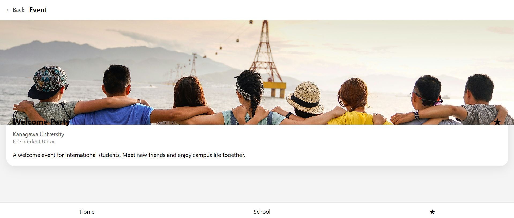
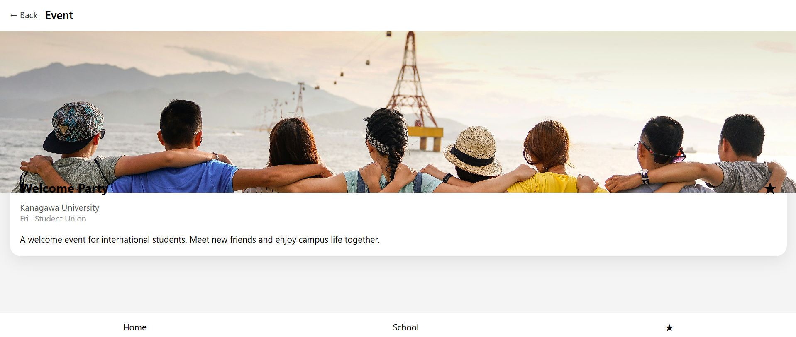

第13回レポート：イベント詳細ページの作成
🔷 今回の目的
第11回で作成したホーム画面を起点として、 イベント情報をより詳しく確認できる「イベント詳細ページ」を新たに作成した。 今回は、機能の実装よりも、画面構成とデザイン性を重視し、 アプリとしての完成度を一段階高めることを目的とした。
🔷 実施内容
- ・イベント詳細ページ用のHTMLファイルを新たに作成
- ・ホーム画面から遷移することを想定した画面構成を設計
- ・イベント画像を大きく配置し、視覚的に分かりやすいUIを意識
- ・カード型デザインを採用し、情報のまとまりを重視
🔷 イベント詳細ページの構成
- ・イベントのメイン画像
- ・イベント名
- ・学校名、日付、開催場所
- ・簡単なイベント説明文
- ・お気に入り（★）ボタン（現時点では見た目のみ）
🔷 作成した画面（スクリーンショット）
以下は、今回作成したイベント詳細ページのスクリーンショットである。 ホーム画面と同じデザイントーンを保ちつつ、 情報を整理して表示できるよう工夫した。
 

🔷 振り返り
ホーム画面だけでなく、詳細ページを作成したことで、 アプリ全体の構造がより明確になった。 特に、画像の比率や余白、情報の区切り方を調整することで、 見た目の印象が大きく変わることを実感した。 今後は、画面同士のつながりや操作性にも注目していきたい。
🔷 次回予定
次回は、ホーム画面とイベント詳細ページのつながりをさらに整理し、 他の画面（学校別表示や保存画面など）の構成について検討する。 必要に応じて、デザインの微調整も行う予定である。
最近までのオーストラリア留学中の様子をInstagramに投稿しています。
ぜひ気軽に覗いてみてください！
Instagram:
@keen_vq37